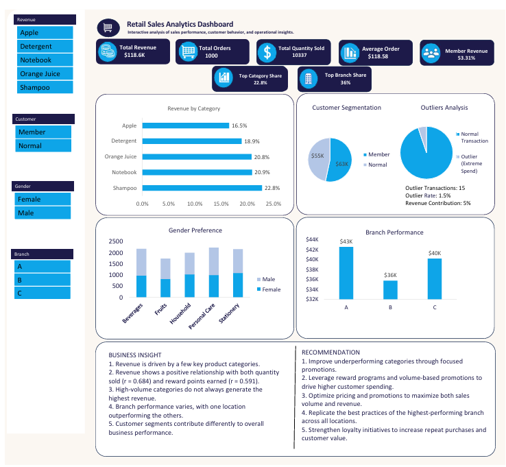
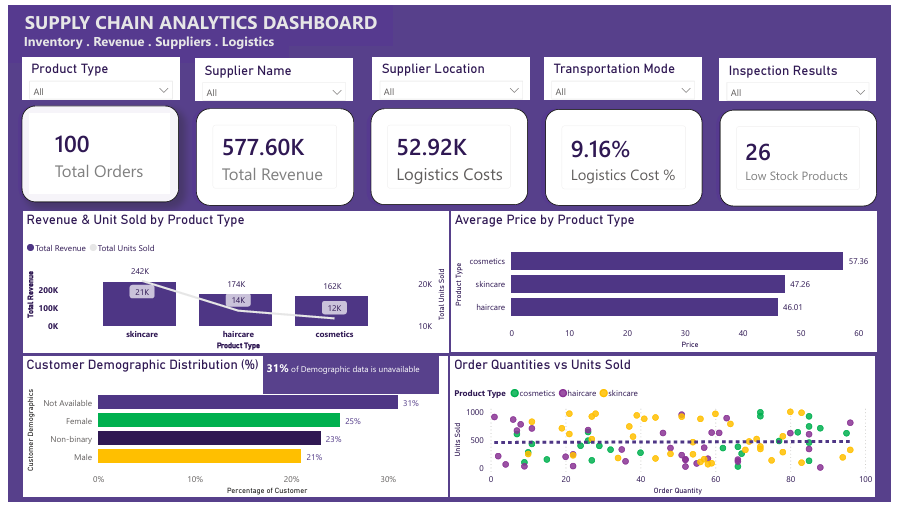
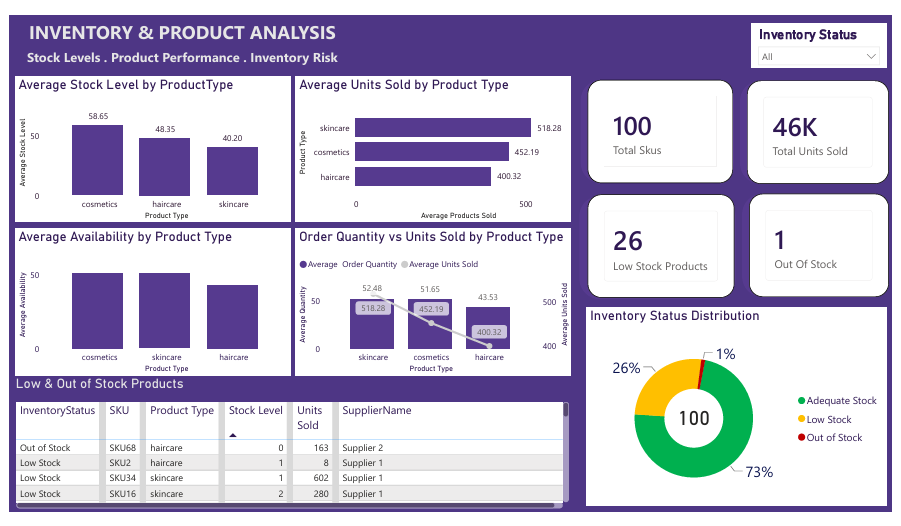
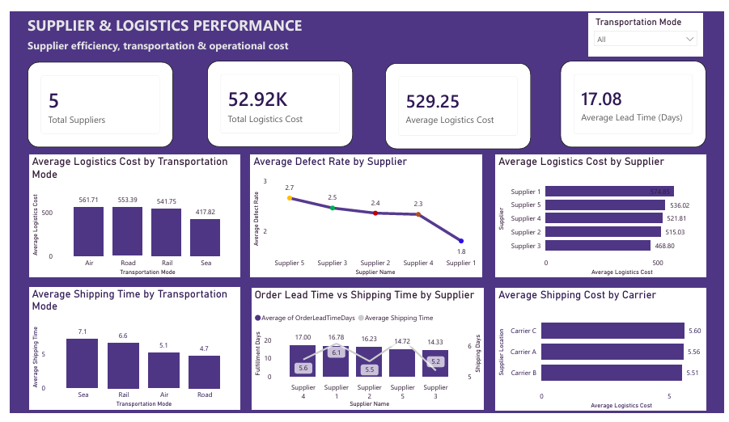
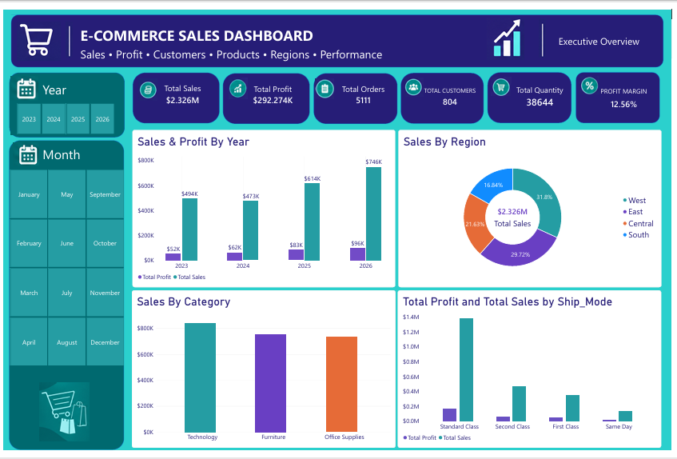
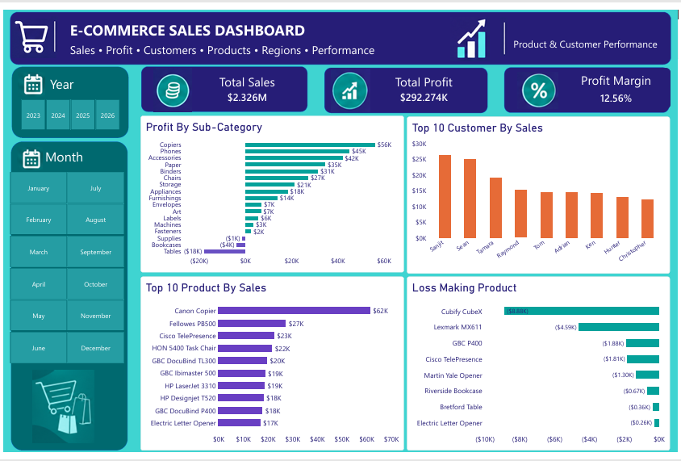
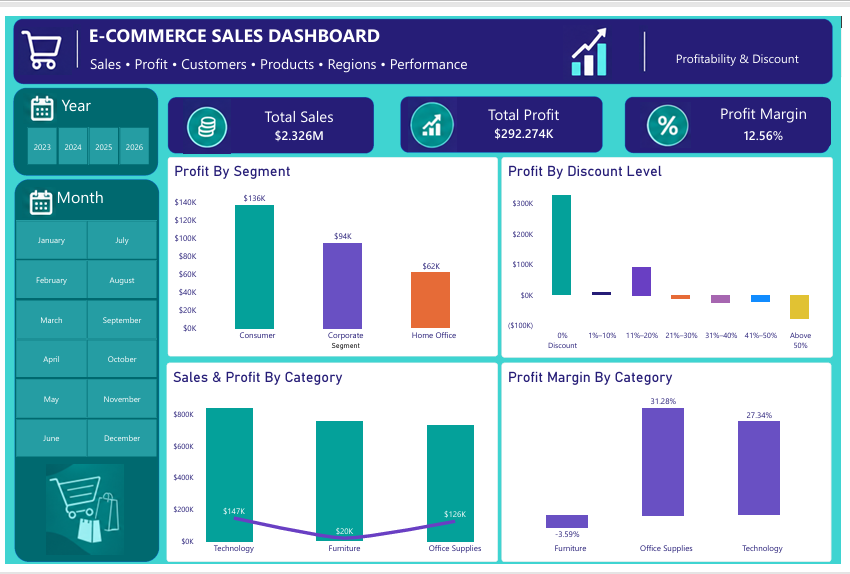
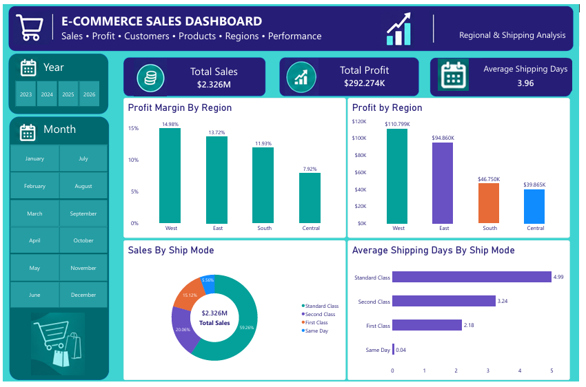
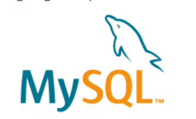
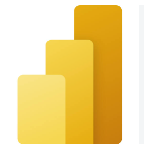

I combine practical operations experience with Excel, SQL, MySQL, Power BI and Python to analyze business performance, identify patterns and communicate insights that support better decisions.
I am a Data Analyst with a background in supply chain, inventory, logistics and operational reporting. I have over five years of experience working with inventory and operational data — analyzing stock movement, reconciling records, investigating discrepancies, preparing Excel reports and supporting planning and decision-making.
My academic background includes an MBA in Finance, a Postgraduate Diploma in Business Administration and a B.Sc. in Economics. I've also completed formal training in Data Analysis, with hands-on skills in Microsoft Excel, SQL, MySQL, Power BI, DAX and Python for Data Analysis.
I enjoy turning raw data into clear, practical insights that help businesses understand performance and make informed decisions. My portfolio demonstrates this through three projects: Retail Sales Analysis, Logistics & Supply Chain Analytics, and E-Commerce Sales Analytics.
Three practical projects showing my progression from Excel-based analysis to SQL, Power BI and MySQL-based business analytics.
Completed 2 August 2026
Independent Excel project analyzing sales, products, categories, customers, branches, gender, quantities and outlier transactions.
Excel • Pivot Tables • Dashboard • Sales Analysis • Data Visualization
View case study →Completed 31 August 2026
SQL and Power BI analysis of inventory movement, suppliers, logistics costs, transportation, quality and operational performance.
SQL • Power BI • Data Cleaning • Supply Chain
View case study →Completed 24 September 2026
Team project analyzing sales, profitability, customers, products, discounts, regions and shipping using MySQL/SQL and Power BI.
MySQL • SQL • Power BI • Team Project
View case study →Completed 2 August 2026
Excel • Pivot Tables • Dashboard • Sales Analysis • Data Visualization
Individual analytics project completed by Chidi Onochie Ronald.
The project analyzed retail sales performance across three branches and five product categories to understand revenue, customer behaviour, product performance and unusual transactions.
The dataset contained 1,000 retail transactions. The analysis covered data cleaning, data exploration, outlier analysis using the IQR method, revenue analysis, branch comparison, customer/member analysis and correlation analysis.
What this data represents: This is a transaction-level retail sales dataset. The analysis contains 1,000 actual sales transactions across 3 branches and 5 product categories. The source presentation describes the file as 1,001 rows including the header and 13 columns.
How to read one row: Each row represents a retail purchase record. It combines information about the branch, product, customer type, gender, quantity purchased and the value of the transaction. That means the dataset lets us move from individual transactions to branch, product and customer-level performance.
Branch A — New York; Branch B — Los Angeles; Branch C — Chicago.
Products grouped into five categories: Beverages, Fruits, Household, Personal Care and Stationery.
The dataset includes customer type (Member/Normal) and gender, allowing basic customer segmentation.
| Data area | What it tells us | Why it matters |
|---|---|---|
| Branch / City | Where the transaction occurred | Compare branch performance and identify operational differences. |
| Product / Category | What was purchased and its broader category | Identify products and categories driving demand and revenue. |
| Unit Price | Price per item | Helps explain transaction value and the effect of quantity. |
| Quantity | Number of units purchased | Measures product demand and basket size. |
| Total Price | Total transaction value | Core measure used to calculate revenue and compare spending. |
| Customer Type | Member versus Normal customer | Shows whether loyalty customers contribute differently to revenue. |
| Gender | Customer gender | Supports category-level purchasing pattern analysis. |
The Excel dashboard brings the analysis together through revenue, order, quantity, customer, category, branch, gender and outlier views.

The presentation recommends prioritising high-performing categories, strengthening member-focused strategies, investigating branch differences, monitoring extreme transactions and using the findings to support inventory and promotional decisions.
The presentation notes that the dataset did not contain a date/time field, limiting time-series and seasonal analysis.
Completed 31 August 2026
MySQL • SQL • Power BI • Supply Chain Analytics
Individual analytics project completed by Chidi Onochie Ronald.
The project investigated logistics costs, inventory availability, supplier performance and operational efficiency to identify areas where the business could reduce avoidable costs, improve replenishment and strengthen supplier decisions.
MySQL was used for data cleaning, validation, exploration and SQL-based analysis. The analysis focused on logistics costs, low-stock and high-demand products, supplier performance, transportation and regional cost patterns.
What this data represents: This is a supply-chain logistics dataset designed to connect product demand, inventory, suppliers, manufacturing, transportation, shipping, quality and logistics costs. The SQL project uses the table supply_chain_data and analyses delivery performance, shipping costs, supplier performance, inventory movement, regional logistics efficiency and lead time.
How to read one row: A row is an operational supply-chain record linking a product/SKU to demand and stock information, a supplier, manufacturing and quality information, and transportation/logistics information. This is why the same dataset can answer inventory, supplier and logistics questions.
SKU, Product Type, Price, Units Sold, Stock Levels, Order Quantities and Availability.
Supplier, supplier location, manufacturing cost, production volume, inspection result and defect rate.
Shipping time, shipping carrier, shipping cost, transportation mode, route, logistics cost and lead-time measures.
| Data area | Important fields | Business question enabled |
|---|---|---|
| Product / Inventory | SKU, ProductType, Price, NumProductsSold, StockLevels, OrderQuantities, Availability | Which products have strong demand but insufficient stock? |
| Supplier | SupplierName, SupplierLocation | How do suppliers differ by cost, speed, quality and revenue? |
| Manufacturing | ProductionVolumes, ManufacturingLeadTimeDays, ManufacturingCosts | Where are upstream production costs and delays occurring? |
| Quality | InspectionResults, DefectRates | Which suppliers or product types present quality risk? |
| Transportation | TransportationMode, Route, ShippingCarrier | Which modes, routes and carriers create different cost/speed profiles? |
| Cost & Revenue | LogisticsCosts, ShippingCosts, ManufacturingCosts, RevenueGenerated | Where can operational cost be reduced and revenue protected? |
| Lead Time | OrderLeadTimeDays, SupplierLeadTimeDays, ShippingTimesDays | Is delay mainly upstream or during transportation? |
The Power BI reporting was organised into three views: Supply Chain Analytics, Inventory & Product Analysis, and Supplier & Logistics Performance.



The presentation recommends replenishing the identified low-stock SKUs, reviewing Supplier 4, investigating regional logistics costs, and implementing a supplier scorecard covering cost, speed and quality.
Completed 24 September 2026
MySQL • SQL • Power BI • Team Project
Three-person team project completed by Chidi, Phoebe and Toyeibat.
The project examined where sales were generated and where the business was actually making or losing profit across customers, products, regions, discounts and shipping.
The team used MySQL for data cleaning, validation, exploratory analysis and SQL business questions, then translated the results into Power BI dashboards and KPI reporting.
What this data represents: This is a Superstore / E-Commerce sales dataset containing order, customer, product, geographic, sales, discount, profit and shipping information. After cleaning and validation, the final analytical dataset contained 10,192 records, 20 original analytical fields and 2 derived fields.
How to read one row: The data is analysed at order-line level rather than simply treating every row as a unique order. That is why the final dataset has 10,192 records but only 5,111 distinct orders and 804 distinct customers. A record connects an order to a customer, product, geography, sales value, discount, profit and shipping information.
Sales, Quantity, Discount and Profit — used to distinguish sales growth from profitable growth.
Customer ID/Name, Segment, Product ID/Name, Category and Sub-Category.
Region, State, City, Ship Mode, Order Date and Ship Date.
| Data area | Important fields | What it helps us understand |
|---|---|---|
| Orders & Dates | Order_ID, Order_Date, Ship_Date, Ship_Mode | Order volume, time trends and shipping-time performance. |
| Customers | Customer_ID, Customer_Name, Segment | Customer sales, profit and segment performance. |
| Geography | Country_Region, City, State_Province, Postal_Code, Region | Where sales and profit are generated and where losses occur. |
| Products | Product_ID, Category, Sub_Category, Product_Name | Which products and categories drive sales versus profit. |
| Commercial Metrics | Sales, Quantity, Discount, Profit | Revenue, volume, discount exposure and profitability. |
| Derived Metrics | Shipping_Days, Profit_Margin | Shipping performance and profitability after transformation. |
The dashboard contains four pages: Executive Overview; Product & Customer Performance; Profitability & Discount; and Regional & Shipping Analysis.




The presentation recommends using discount thresholds, reviewing weak-margin products, monitoring regional profitability and using customer, product and shipping insights to support more informed commercial decisions.
Over five years of experience working with inventory, supply chain and operational data, combining practical operations knowledge with reporting and analysis.
COOPI – Cooperazione Internazionale | Jan 2021 – Present
COOPI – Cooperazione Internazionale | Aug 2020 – Dec 2020
Nutrition Corner | Apr 2018 – Jun 2019
A combination of practical operations knowledge and hands-on analytics capability.
Data Analysis & Reporting
Data Cleaning & Validation
Reconciliation & Discrepancy Analysis
Inventory & Stock Movement Analysis
Data Visualization
Business Reporting
Research & Information Gathering
SQL Querying
Data Cleaning & Validation
Exploratory Analysis
Business Queries
Aggregation & KPI Analysis
Microsoft Excel (Advanced)
Pivot Tables
Data Analysis
Dashboard Development
Reporting

SQL Querying
Data Cleaning & Validation
Exploratory Analysis
Business Queries
Aggregation & KPI Analysis

Power Query
Data Transformation
Data Modeling
One-to-Many Relationships
DAX Measures
Calculated Columns
Calculated Tables
KPI Development
Interactive Dashboard Development
Supply Chain Analytics
Logistics Analytics
Inventory Analysis
Stock Reconciliation
Supplier Performance Analysis
Retail Sales Analytics
E-Commerce Analytics
Analytical & Problem Solving
Attention to Detail & Accuracy
Written & Verbal Communication
Stakeholder Collaboration
Time Management & Meeting Deadlines
Confidentiality & Discretion
Initiative & Proactiveness
Nasarawa State University, Nigeria
Business Administration — Nasarawa State University, Nigeria
University of Abuja, Nigeria
Cirvee Tech Academy, Ibadan, Nigeria
If you would like to discuss a data analytics opportunity, project or collaboration, feel free to reach out.
Email: chidionochie@gmail.com
Phone: +234 703 010 4356
LinkedIn: linkedin.com/in/chidionochie
GitHub: github.com/onironald
Portfolio: onironald.github.io
Resume: Download PDF